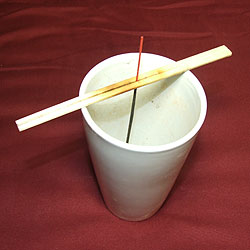
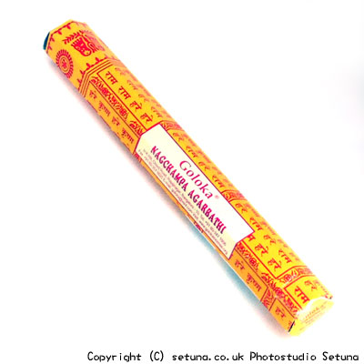

焚かずに置いておくとナツメグとシナモンをたして作った焼き菓子の様な甘い匂いがします。
火を点けると甘くて優しい、どこかしら懐かしい匂いが漂います。
なんだか心がウキウキしてくる様な、いい匂いです。
焚き終わると駄菓子屋さんの中にいるような感じの香りが長く残ります。
全体的に、懐かしくて甘酸っぱい気分になってくるような優しい感じのお香ですね。
ソフトタイプのお香ですので少しべたついています。
湿度に少し弱く密封容器に乾燥剤を入れて保管した方がいいですね。
ベタつきがひどいなと思う時はすぐに使わず、2、３日上記の方法で保管をした後で使った方が途中で消えにくくなります。
又、このような途中で消えやすいお香は、逆さにして香を焚くと、消えにくくなりますので、逆さで焚くタイプのスタンド式の香立てを入手すると部屋も灰で汚れにくいのでいいかもしれません。
私の知っている物は、ガラス製の瓶で出来た物と木製の箱形の物ですが他の素材の物もあるかもしれませんので探してみるのも楽しいかもしれませんね。
もっとも私は縦長のフラワーベースに割り箸を渡して使ってますけど(笑)・・・割といいですよ。

